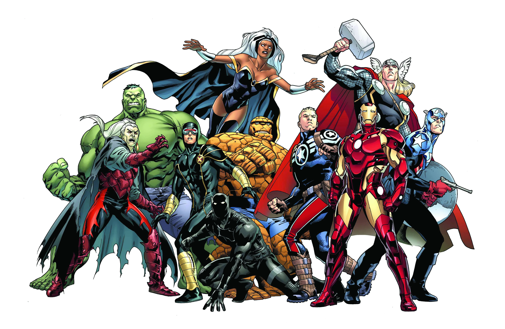
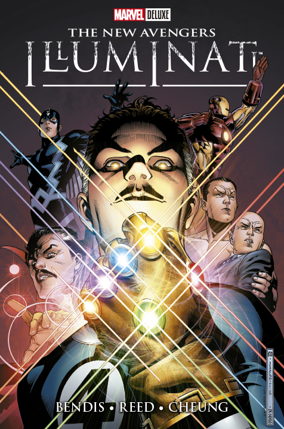
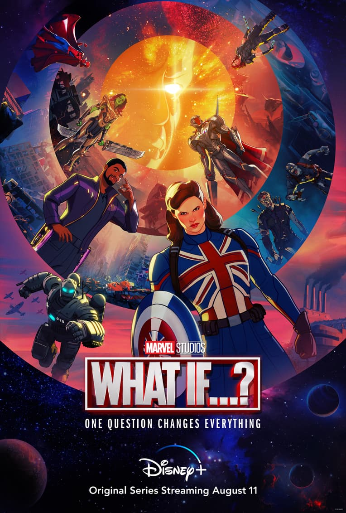
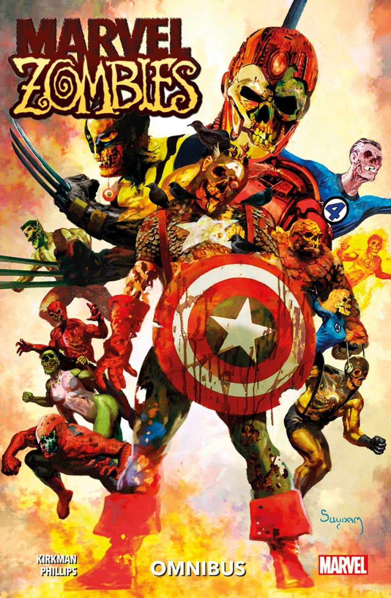
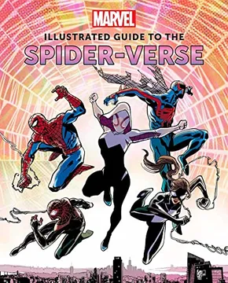
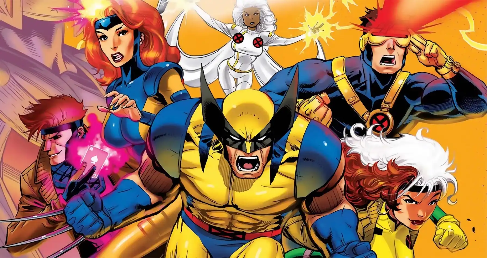
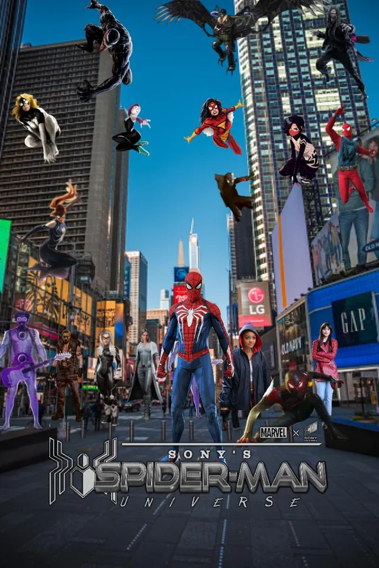
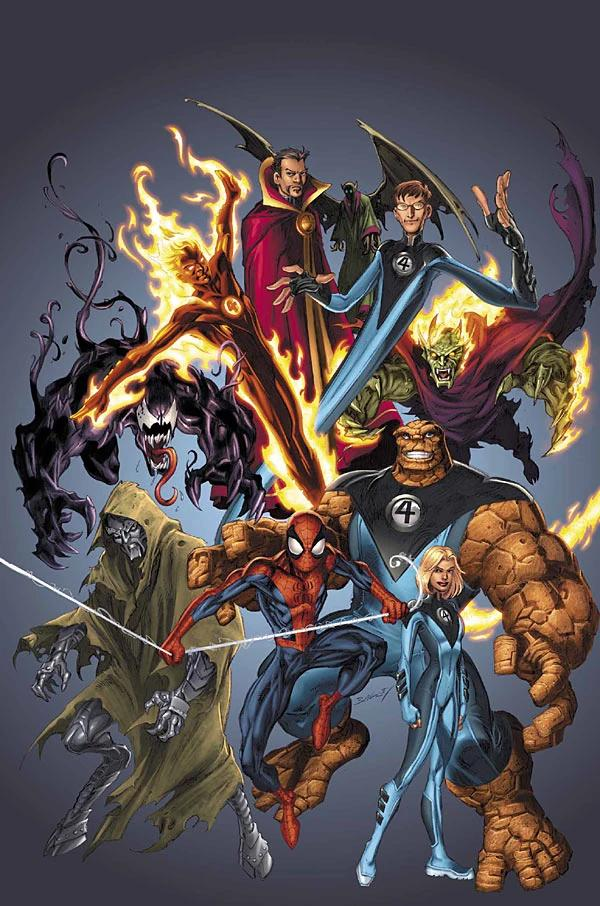
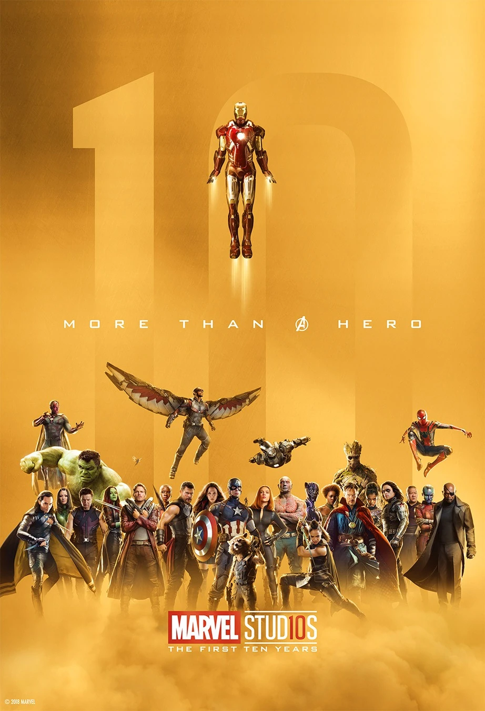

| Universo | Descripcion | Personajes destacados | |
|---|---|---|---|
| Tierra-616 | Linea principal del MCU. Es la realidad donde ocurren la mayoria de las peliculas. Incluye desde Iron Man (2008) hasta Avengers: Endgame y mas. Es el universo base del cine. | Iron Man, Capitan America, Thor, Spider-Man, Wanda, Doctor Strange |  |
| Tierra-838 | Universo mostrado en Doctor Strange in the Multiverse of Madness. Aqui los Illuminati son los lideres. Ultron funciona correctamente y Strange es eliminado por sus errores. | Reed Richards, Capitana Carter, Charles Xavier, Maria Rambeau como Capitana Marvel |  |
| What If...? | Multiverso animado donde se exploran decisiones alternativas: si T'Challa fuera Star-Lord, si Peggy fuera Capitana Carter, si Ultron ganara, etc. Es vigilado por el Observador. | Capitana Carter, T'Challa Star-Lord, Strange Supremo, el Observador |  |
| Marvel Zombies | Universo apocaliptico donde un virus transforma a los heroes en zombis con poderes. Surge en la serie What If...? y tendra su propia serie animada. | Spider-Man, Wanda zombi, Iron Man zombi, Scott Lang cabeza |  |
| Spider-Verse | Multiverso centrado en diferentes versiones de Spider-Man. Aparece en Into the Spider-Verse y Across the Spider-Verse. Cada universo tiene su propio estilo y heroe. | Miles Morales, Spider-Gwen, Peter B. Parker, Spider-Ham, Miguel O'Hara |  |
| Universo X-Men (Fox) | Realidad donde los mutantes existen de forma publica. Incluye todas las peliculas de los X-Men creadas por Fox, desde la primera trilogia hasta Logan. Se conecta al multiverso en Deadpool 3. | Wolverine, Magneto, Charles Xavier, Jean Grey, Deadpool, Storm |  |
| Sony-Verso | Universo cinematografico creado por Sony con personajes como Venom, Morbius y Kraven. Existe de forma paralela al MCU. Vulture fue transportado a este universo. | Venom, Morbius, Vulture, Kraven el Cazador |  |
| Tierra-1610 | Universo Ultimate en los comics. Fue creado para modernizar las historias. Aqui Miles Morales toma el lugar de Peter Parker. Reed Richards se vuelve villano. | Miles Morales, Reed Richards, Nick Fury Ultimate, Ganke |  |
| Tierra-199999 | Nombre oficial que los comics le dan al universo del MCU (el cine). Este incluye todas las peliculas y series conectadas desde 2008. | Todos los Vengadores, personajes del cine y Disney Plus |  |